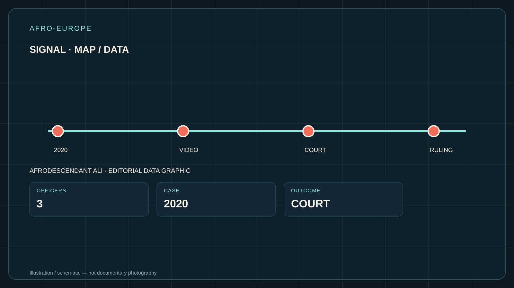

French court recognizes racist nature of violence in Michel Zecler case
Three officers received prison sentences in the case arising from the 2020 beating of the Black music producer; the court’s reasoning remains the key legal record.

What We Know
AP and Le Monde report that a Paris court recognized the racist nature of the violence against Michel Zecler and sentenced three police officers to prison terms. The case arose from his 2020 arrest and beating.
The record matters
Video evidence and disputed police accounts were central to the case. The reported ruling is a court finding in this case; it should not be generalized to every allegation of police racism or violence.
Why It Matters
The legal significance will depend on the written judgment, the treatment of racial motive and how any appeal proceeds. A sentence is a judicial outcome, not a substitute for reading the court’s reasoning.
What We’re Watching
The judgment text, appeals, sentence details and whether French courts cite the ruling in later cases involving racist motive and police violence.